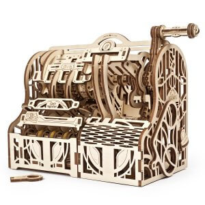

PUZZL35
3D Wooden Puzzles are a wonderful way to pass time and is also known to build specific logical skills that can help with the development of the brain.

Facts about 3D Wooden Puzzles:
- The highly intricate design and simple assembly of these puzzles were only made puzzle through the use of laser cuts.
- The largest collection of puzzles in the world is the Philippines with 1,000+ puzzles.
- Paul Gallant, an American businessman, invented 3D puzzles in 1991.
Go back.